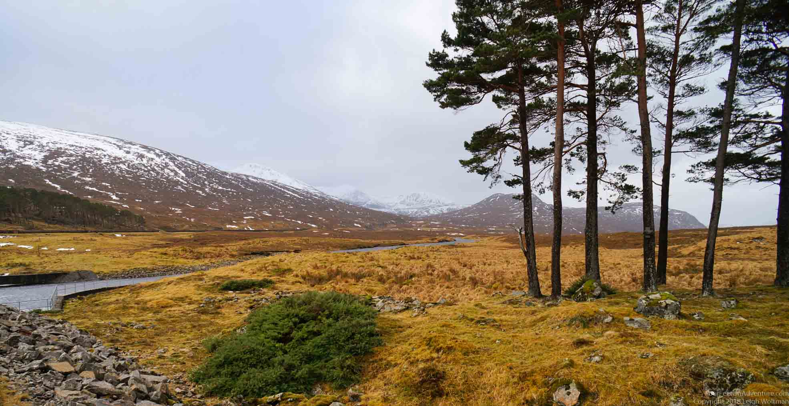
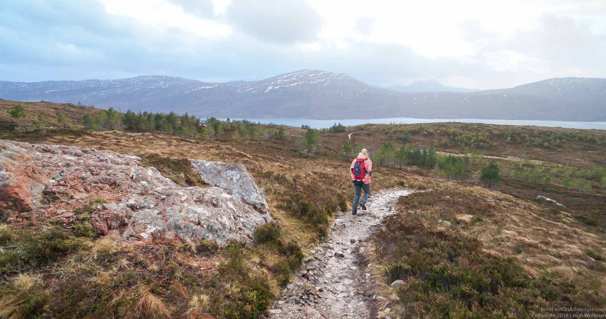
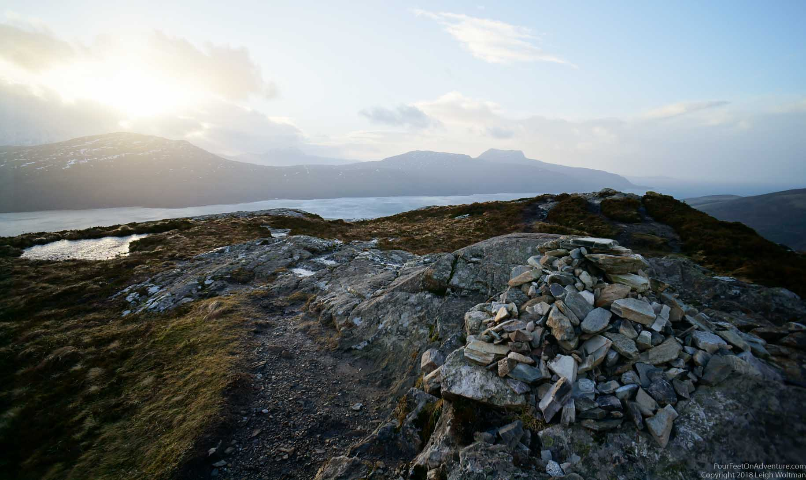
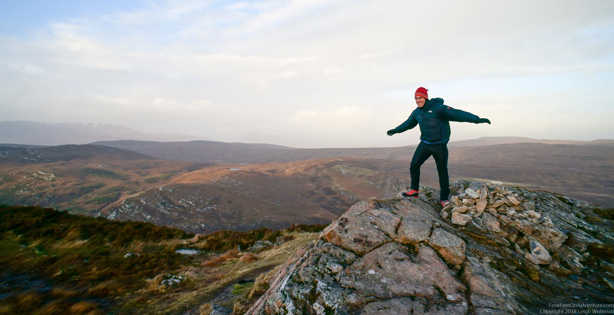
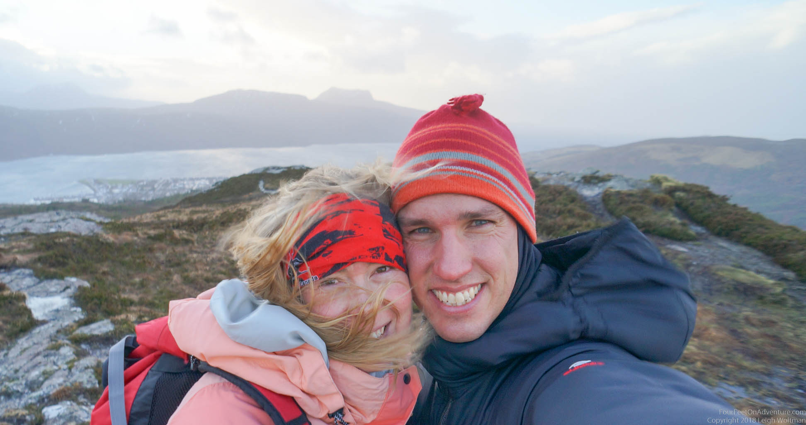

Hills of rugged heather,
Cairns of crumpled rock,
The loch glistens in the sunlight,
And the sky sends the birds flying.
--trail side cairn

Today we find ourselves on the top of the world. One of those breathtaking ones. A gorgeous panorama surrounds us, bare mountains as far as the eye can see, with little mountain lakes, a sea loch in the distance, inland loch in the other distance, snow-capped mountains in the further distance and rolling clouds in the sky. The wind is trying to make us fly. It pulls on our faces and leaves us gasping for air. My hair becomes untamable. Just like my steps. The gusts play with our balance so that we appear as if we’ve spend the morning tasting whiskey. We stumble around rocks and prickly bushes. Drunk with awe.

We look back to the sea loch behind us. Just before we left the car, the sky was pitch black. We delayed our start with 5 minutes, in which the first drips were soon followed by gusts of rain and hail. The car was shaking. 10 minutes later it stopped. We looked again. Clear blue skies, all the way to the horizon. But, the loch still looked troubled. A haze above the water surface could not hide the high humidity due to the water turbulence. The white caps as far as the eye could reach, all heading in our direction could also not be clearer. It’s windy out there.

The drive was gorgeous. From the East coast, we went to the West coast, crossing the white capped highlands. The rain has led to waterfalls, that now paint the sides of the mountains, of which I can only imagine how good the climbs would be if it was 15 degrees colder. Wild rivers are running along the road, making us eager to try them in a kayak. Every now and then, a cottage can be seen in the middle of nothingness. Is that a bothy? Bothy’s are abandoned old houses that are kept to accommodate travelers. Entrance is free, the trick is to know about them, to hike or bike to them, and to respect them. We can’t wait to try our first.

But not today. Today is top-of-the-world day. We are content and happy, with our full consciousness focused on this beautiful spot. We feel the wind on our faces, and let rare rays of sun warm us, before the next cloud has the chance to block her from our sight. If only every day was top-of-the-world day...
